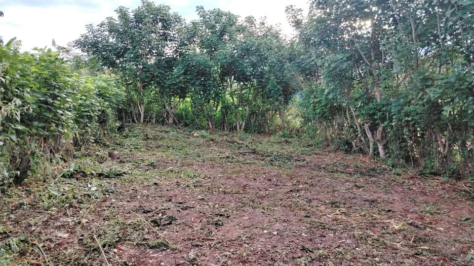

PEN20,000 200 m²

Cuenta con título, tiene agua, a 10 minutos de la carretera yurimagua, En remate 20 mil soles, para invertir a largo plazo, urb Miraflores.. Entrando por la primera calle del recreo Venecia, el terreno está casi al final de la calle